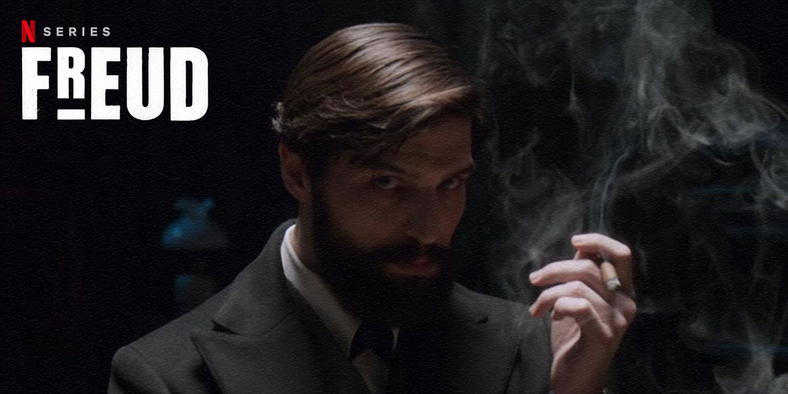

-
How I Met Your Mother

How I Met Your Mother, ABD'de yayın yapan CBS kanalında, 19 Eylül 2005'ten 31 Mart 2014'e kadar yayınlamış olan, yaratıcılığı ve yapımcılığını Carter Bays ve Craig Thomas'ın, başrollerini Josh Radnor, Jason Segel, Neil Patrick Harris, Cobie Smulders ve Alyson Hannigan'ın üstlendiği durum komedisi türündeki televizyon dizisidir. 31 Mart 2014'te yayınlanan 40 dakikalık özel bölümüyle sona ermiştir.
Netflix'te izlemek için tıklayınız. -
Dark

Dark, Baran bo Odar ve Jantje Friese tarafından yaratılan bilimkurgu ve gerilim türündeki Alman İnternet dizisi. Almanca olan ilk Netflix orijinal dizisidir ve 1 Aralık 2017'de yayınlanmaya başlamıştır.
Netflix'te izlemek için tıklayınız. -
Game Of Thrones

Game of Thrones, David Benioff ile D. B. Weiss tarafından yaratılan fantastik televizyon dizisidir. Dizi, ABD televizyon kanalı HBO'da yayınlanmıştır. George R. R. Martin'in epik fantezi serisi Buz ve Ateşin Şarkısı'ndan uyarlanmış olan dizi, adını serinin ilk kitabından almaktadır.
Blutv'de izlemek için tıklayınız. -
Freud
Freud, Sigmund Freud'un erken dönemini konu edinen Avusturya-Almanya ortak yapımı suç dizisidir. İlk sezonu Netflix'de 23 Mart 2020'de 8 bölüm olarak yayımlandı. Yönetmenliğini Marvin Kren'in yaptığı dizide Freud'u Robert Finster canlandırırken Fleur Salomé'yi ise Ella Rumpf canlandırmaktadır.
Netflix'te izlemek için tıklayınız. -
Breaking Bad

Breaking Bad, Vince Gilligan tarafından tasarlanmış ABD drama televizyon dizisidir. 50 yaşında lisede kimya öğretmeni olan Walter White (Bryan Cranston), maddi açıdan ailesinin gereksinimlerini karşılayabilmek için araba yıkamacısında ek iş yapmaktadır ancak bir süre sonra ileri derecede akciğer kanseri olduğunu ve çok kısa bir ömrünün kaldığını öğrenir.
Netflix'te izlemek için tıklayınız.